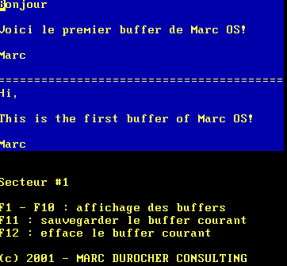
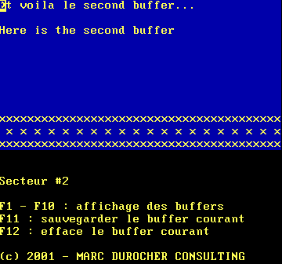
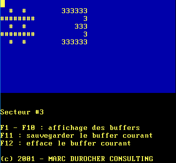
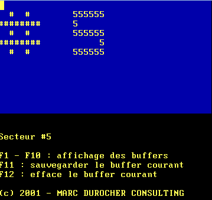

The initial goal was to develop a basic operating system. But the project turned into developing a very simple application that on depends on BIOS interrupt calls.
The application is a kind of basic and limited document editor.
You can manage up to 10 files. On file is restricted to a part of a floppy disk sector (1 sector equals 512 bytes).
Each file affected to a determined sector.
The document size is smaller than 512 bytes by design, and actually less than that. It is actually limited to the input area
on the screen : 40x12 characters.
You can switch from one buffer to another using function from F1 to F10:
The solution was designed to be shipped on a floppy disk. The Personal Computer had to boot on the floppy disk. The binary file is an image of a floppy disk. You can execute the solution using an hypervisor: VMWare Player, VirtualBox... or in an emulator Qemu for example. You have to remember that the solution expects to be hosted on a floppy disk. So the image has to be associated to the virtual floppy drive!
The image is available here.
When launching the Virtual Machine, the (virtual) BIOS boots on the virtual floppy disk drive.
A message is displayed on the screen. You are invited to press a key to launch the application.
The bootloader will actually load 4 sectors (4 x 512 bytes) from the floppy disk, starting from the second sector of
the first cylinder.
Here we are. The application is loaded. It only depends on the BIOS functions (no Linux kernel, nor MSDOS loaded). Screen, keyboard and floppy disk drive are driven by BIOS interrupt calls. For the display, it uses no interrupt call but the application writes chars directly to VGA memory reserved address in the memory segment 0xb800 (The processor is running in Real Mode !)
Pressing the function key [F2] leads you to the second buffer.
Pressing the function key [F3] leads you to the third buffer.
Pressing the function key [F5] leads you to the fifth buffer.
You can
Well, now, the job is to rewrite the source code, and the build scripts.